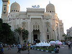
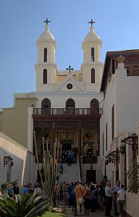
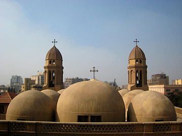

|
To Join Us, click here
Religious tourism in Egypt
The religious tourism in Egypt very importantcharacterized by very mild climate and beautiful
it comes a lot of tourists from all over the world to enjoy their
and civilization of ancient and religious tourism is one of the most important Alsaahat
in Egypt and is divided into two parts .. .................
first section is the Islamic religious tourism in Egypt, which include
mosques and other places of worship for Muslims and
As for the second part is religious tourism Coptic Christianity or
They include churches and other places of worship for Christians.
in the first we are taking about
Islamic religious tourism in Egypt
that these places possess the ability to attract tourists
in a non-certified, and now we'll show you some places
which you can visit
1-M-Ali mosque
 The castle has been established since Saladin, the seat of government in the Ayyubid and Mamluk state , and in the reign of the Ottomans and then the governors in the upper Dynasty , and continued well into the era of Khedive Ismail , where Amer Abdeen Palace took the seat of the king . Mohammed has taken on the big head of the family and the founder of the upper Egyptian Modern Egypt , after the reform of the walls of the castle , palaces and the establishment of schools and government offices , and culminated in the establishment of its facilities this mosque , who oversees the city of Cairo Bakbabh and minarets .
Has initiated its inception in the year 1246 AH 1830 on the ruins of ancient buildings , leaving the premises of the Mamluks and has his building in the year 1265 AH, 1848 , in the reign of Abbas Pasha I has inscriptions and decorations
The castle has been established since Saladin, the seat of government in the Ayyubid and Mamluk state , and in the reign of the Ottomans and then the governors in the upper Dynasty , and continued well into the era of Khedive Ismail , where Amer Abdeen Palace took the seat of the king . Mohammed has taken on the big head of the family and the founder of the upper Egyptian Modern Egypt , after the reform of the walls of the castle , palaces and the establishment of schools and government offices , and culminated in the establishment of its facilities this mosque , who oversees the city of Cairo Bakbabh and minarets .
Has initiated its inception in the year 1246 AH 1830 on the ruins of ancient buildings , leaving the premises of the Mamluks and has his building in the year 1265 AH, 1848 , in the reign of Abbas Pasha I has inscriptions and decorations
2-Al azhar mosque
 Is one of the most important mosques in Egypt , most notably in the Muslim world
Is one of the most important mosques in Egypt , most notably in the Muslim world a collector and the University for more than a thousand years , has been established at the hands of
Jawhar when it was open Cairo 970 AD , [2] the order of Moez Ledin Allah
first Fatimid caliphs in Egypt , and after he founded the city of Cairo
initiated the establishment of Al-Azhar Mosque , the Caliph put Moez Ledin Allah
foundation stone of Al-Azhar mosque in Ramadan in the year 14 AH 359 - 970 m
, and completed the construction of the mosque in the month of Ramadan in the year 361 AH - 972 m , [2] it is
the first mosque in the city of Cairo Enshi city, which has gained the title of the city of a thousand minarets
, [nb 1] It is the oldest existing impact Fatimid Egypt. Historians have disagreed
in the naming of this mosque , and likely to Prince Al-Azhar, the Fatimids
named after Fatima Zahra daughter of the Prophet Mohammed and a tribute to anniversaries . [3]
2-Abo elabas mosque
This mosque houses the tomb of Sheikh Abu Abbas ShahabuddinAhmed bin Hassan bin Ali Ansari Khazraji Mursi
, which relates to the percentage of Balsahabi Saad bin worship.
Born Sheikh Abu Abbas Mursi in 616 AH corresponding to 1219 AD.
Grew up in an environment of Abu Abbas prepared for religious mysticism. He studied
and the Covenant is taken by sheikh Abu al-Hasan al-Shazly. Abu Abbas
resided in Alexandria, forty-three years until he died in the twenty-fifth of November with
year 686 AH and was buried in a cemetery in Alexandria Bab Al Bahr
. That was the year 706 AH, while built-Sheikh Zainuddin bin Qattan large out experiments
t Alexandria mosque it
secondlly we are taking about
Christian religious tourism in Egypt
that these places possess the ability to attract tourists
in a non-certified, and now we'll show you some places
which you can visit
1-Hanging Church
 The Hanging Church is located in the neighborhood of ancient Egypt, in the area of Coptic Cairo important archaeological
, it is close to the mosque Amr ibn al-Aas
, and Ben Ezra Jewish Temple, and the Church of St. Mina near Fortress of Babylon
, and Martyr Church Mercurius (Abu Seven), and many other churches
. Palmalqh named because it is built on the twin towers of the old towers of the Roman fort
(Fortress of Babylon), who had it built by Emperor Trajan
in the second century AD, and is considered an outstanding
is the oldest churches that still remain in Egypt.] 1]
2-Church of the Virgin Mary
 He built the church / Khalil Ibrahim Tawfiq your
He built the church / Khalil Ibrahim Tawfiq your under the supervision of the Italian architect Lemon Gelly
in the form of a miniature of the famous church of Hagia Sophia , Turkey Bastnpol
, after declaring the vision of the Blessed Virgin Mary, it will appear in the church has been
the completion of the building of the church in 1924 and was inaugurated
Tkirasha to pray on Sunday, June 29, 1925 under the chairmanship of Bishop Athanasius, Bishop of
Beni Suef the late , and decorated with carvings of the Church from the inside
great saint and the Virgin icons painted by multiple artists Italians
attended specifically for this purpose , and the church remained in this District and the Pacific , which was an old
area on the outskirts of Cairo . [1]
3-St. Mark's Church Street Cleopatra
 The idea of the establishment of the church in 1914 and formed a committee tothat its Street Abbas put
foundation stone on Friday, 16 يونيو 1922
in the presence of Bishop Yousab Bishop of Fayoum and Giza started praying regularly
the church until 1930, when construction was completed and started praying in the church,
The church consists of three altars, a first main
in the middle on the name of the martyr St. Mark the patron saint of the church
and the second in the Navy and called the name of the martyr St. George
and the third in the tribal name of the Virgin Mary
This has been baptismal altar is at the very beginning
this is a table that explain
the places you can vist in egypt
under the address of Religious tourism in
our egypt and the real cost of this travel in any
company and the offer that our company makes for you
the first program
1-moham ali mosque
2-Al azhar mosque
3-abo elabas mosque
the real cost 2450
the cost after discound 2100
the second program
1-church of virgin mary
2-mark's churchstreet cleopatra
3-hanging church
the real cost 2200
the cost after discound 1899
the third program
1-moham ali mosque
2-hanging church
3-Al azhar mosque
the real cost 2300
the cost after discound 1950
the fourth program
1-church of virgin mary
2-Al azhar mosque
3-mark's churchstreet cleopatra
the real cost 2300
the cost after discound 1950